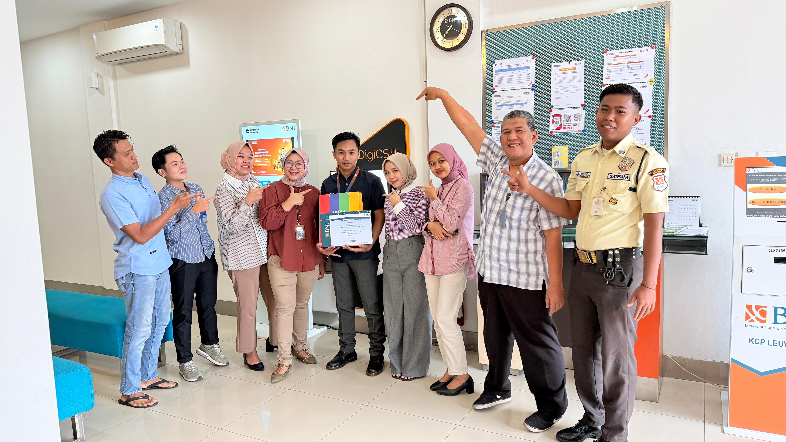

EXPERIENCE
PT Bank Negara Indonesia
Program Magang Bersertifikat Kementerian Ketenagakerjaan (Kemnaker) di Bank Negara Indonesia dengan mendukung kegiatan operasional dan pelayanan perbankan. Terlibat dalam proses administrasi, pembukaan dan aktivasi rekening, verifikasi data nasabah, serta membantu pengelolaan dokumen dan pelayanan transaksi harian di kantor cabang. Melalui program magang ini, memperoleh pengalaman kerja profesional dalam bidang pelayanan perbankan, komunikasi dengan nasabah, administrasi data, serta penerapan ketelitian dan disiplin kerja di lingkungan industri perbankan.
Skill
Pelayanan Nasabah
Komunikasi dan Public Speaking
Problem Solving
Administrasi Perbankan
Kerjasama Tim
Certificate

×


Jobdecs
- Membantu proses pembukaan dan aktivasi rekening nasabah.
- Melakukan verifikasi data dan pengelolaan dokumen administrasi perbankan.
- Mendukung pelayanan nasabah serta membantu penyelesaian kebutuhan transaksi harian.
- Membantu operasional kantor cabang agar berjalan efektif dan terorganisir.